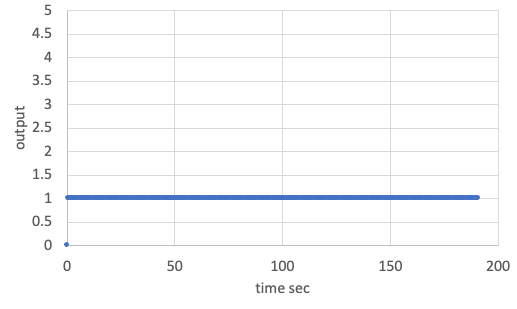
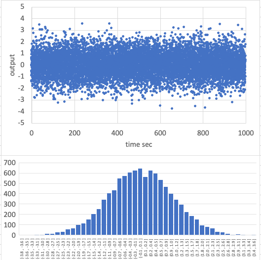
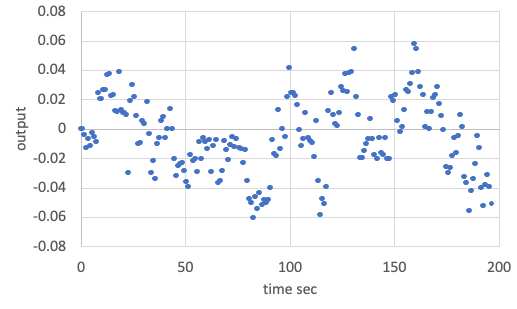

Specification of Sensor class
1. Overview
1. Functions
- The
Sensorclass is a base class to provide common features for sensors. - This class adds the following noises and output limits.
- Constant offset noise
- Normal random noise
- Random Walk noise
- Scale factor noise and cross-talk between axes
2. Related files
- Main file:
sensor_base.cpp, .hpp - Used Libraries:
vector.hpp,matrix.hpp,normal_randomization.hpp,random_walk.hpp
3. How to use
- Inherit this class by your sensor class.
- The
GyroSensorandMagnetometerinS2E_COREare useful as usage examples.
2. Explanation of Algorithm
1. Constructor
1. overview
- Users can set sensor noise parameters by using the Constructor.
2. inputs
scale_factor: Scale factor matrix to express scale factor noise and cross-talk- Range related parameters
range_to_const_c: The output value cannot over this valuerange_to_zero_c: The output is set as zero when the true value is larger than this value.- This feature is optional. If you don't want to use the value, please set this huge value.
range_to_zero_cshould be larger thanrange_to_const_c.
bias_noise_c: Constant offset noisenormal_random_standard_deviation_c: Standard deviation for normal random noise- Random Walk noise parameters
random_walk_step_width_s: Step width for Random Walk propagation (unit: sec)- It should be the same as the update frequency of the sensor.
random_walk_standard_deviation_c: Standard deviation for Random Walkrandom_walk_limit_c: Soft limit of Random Walk
- Note: The number of elements for all parameters can be set by using the
templatefeature. - Note: All parameters are defined in the component frame.
- Note: Normally, the unit of the parameters is the same as the unit of true value. Users also can change the unit by using the scale factor matrix.
3. algorithm
- The values of the
range_to_const_candrange_to_zero_care checked here with theRangeCheckfunction.
4. note
- N/A
2. Measure
1. overview
- This function adds all noises, and the output is clipped by the
Clipfunction not to over the ranges.
2. inputs and outputs
- input: True value on the component frame
- output: Measured value on the component frame
3. algorithm
- N/A
4. note
- N/A
3. Results of verifications
-
We verified the
Sensorclass with the following parameters. -
Default parameters
scale_factor= Unit matrixrange_to_const_c= 5range_to_zero_c= 10bias_noise_c= 0.0normal_random_standard_deviation_c= 0.0random_walk_step_width_s= 0.1 secrandom_walk_standard_deviation_c= 0.0random_walk_limit_c= 0.0- input value: 0.0
-
Case 1:
bias_noise_c= 1.0, others = default- The bottom figure shows the result of the output data.
- We verified the constant offset noise calculation is correct according to the data.
 Result of constant offset noise (bias_noise_c = 1.0). -
Case 2:
normal_random_standard_deviation_c= 1.0, others = default- The simulation time is 1000sec, and the log output period is 0.1sec.
- The bottom figure shows the result of the output data.
- The calculated average and standard deviation from the output data are shown as follows.
Average = 0.012Standard Deviation = 1.000
- We verified the normal random noise calculation is correct according to the data.
 Result of normal random noise (normal_random_standard_deviation_c = 1.0). -
Case 3:
random_walk_standard_deviation_c= 0.3,random_walk_limit_c= 0.05, others = default- The simulation time is 200sec, and the log output period is 0.5sec.
- The bottom figure shows the result of the output data.
- The output data randomly varies inside the limit value.
- Note: The limit is not hard.
- We verified the normal random noise calculation is correct according to the data.
 Result of Random Walk noise (random_walk_standard_deviation_c = 0.3, random_walk_limit_c = 0.05).
4. References
- N/A